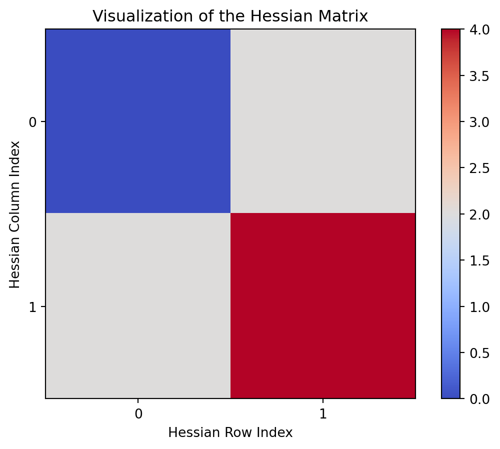

Understanding optimization of bivariate functions using Newton’s method and L-BFGS.
ML
Math
Coding
Author
Kishan Ved and Vannsh Jani
Published
August 20, 2023
Hessian Matrix
Hessian matrix is a square matrix of second order partial derivatives of a scalar valued function. It can be used to describe the local curvature of the function at a point and it is denoted by H.
Using this matrix, we can find out the nature of the curvature at any point \((x_1,y_1)\), by substituting this point in the Hessian.
If the Hessian matrix is positive definite(all eigenvalues are positive) at a point, it indicates that the function is locally convex(has a local minimum) around that point. If it is negative definite, the function is locally concave. If the eigenvalues have both positive and negative values, then this point has a mixture of concave and convex behaviour in different directions and such a point is called a saddle point.
import torchimport numpy as npimport matplotlib.pyplot as plt# Define a sample functiondef f(x):return x[0]*x[1]**2# point where you want to compute Hessian matrix# requires_grad=True tells pytorch to keep track of x0 which form a computation graph to compute gradients easily.x0 = torch.tensor([2.0, 1.0], requires_grad=True)# create_graph=True is used to compute higher order derivatives in the computation graphgrads = torch.autograd.grad(f(x0), x0, create_graph=True)[0]Hessian = torch.zeros((len(x0), len(x0)))for i inrange(len(x0)): Hessian[i] = torch.autograd.grad(grads[i], x0, retain_graph=True)[0]Hessian = Hessian.detach().numpy()plt.imshow(Hessian, cmap='coolwarm')plt.xticks(np.arange(len(x0)))plt.yticks(np.arange(len(x0)))plt.xlabel('Hessian Row Index')plt.ylabel('Hessian Column Index')plt.colorbar()plt.title('Visualization of the Hessian Matrix')plt.show()

Newton’s method for optimizing bivariate functions using Hessian.
Following are the steps to find minimum or maximum of a function:
Make an intial guess.
At the initial guess, we find out how steep the slope of the curve is and how quickly the slope is changing. Hence, we calculate the first derivative and the second derivative at this point.
We can approximate a quadratic function(parabolic bowl) at that point using the taylor series.
Newton’s method then moves to the minimum of the parabolic bowl which is the new guess for the optimal point of the original function.
This process repeats and with each iteration you edge closer to the optimal value of the original function and finally newton’s method converges.
At any iteration, the value of \(x\) can be updated as,
where \(H^{-1}\) is the inverse of the hessian(which is initially assumed to be the identity matrix) and \(\nabla f(x_i)\) is an array/vector containing the partial derivatives of \(f\) with respect to all the variables.
Following is the code for optimizing \(f(x,y)=-sin(x)-cos(y)\).
Let’s first plot \(f(x,y)\).
import numpy as npimport matplotlib.pyplot as pltx = np.linspace(-5, 5, 100)y = np.linspace(-5, 5, 100)X, Y = np.meshgrid(x, y)def f(X,Y):return-np.sin(X) - np.cos(Y)Z = f(X,Y)fig = plt.figure(figsize=(8,6))ax1= fig.add_subplot(111, projection='3d')ax1.plot_surface(X, Y, Z, cmap='viridis')ax1.set_xlabel('X')ax1.set_ylabel('Y')ax1.set_zlabel('Z')ax1.set_title('f(x) = -sin(x) - cos(y)')plt.show()
Through the contour plot we can understand that even though our initial guess was the point \((2,1)\) we finally reached the minima of the function. In the above contour plot, the bluish circle is the initial guess and the red cross is the final guess.
Depending upon different initial guesses, the final guess could land onto different minimas or possibly even a saddle point.
In the case above we got a saddle point, this is one of the drawbacks of the newton method.
Although the newton’s method for optimization converges faster than the gradient descent algorithm and one doesn’t have to also face the difficulty in deciding the learning rate as is faced in gradient descent, the computation of the Hessian and it’s inverse is computationally very expensive(having computational complexity of \(O(n^3)\) for functions with n variables.
In order to use this method for optimization, the hessian needs to be positive definite which may not always be possible.
Hence to overcome these scenarios, Quasi-newton optimization algorithms can be used like the BFGS, and the LBFGS, where we try to approximate the hessian instead of calculating it.
L-BFGS for optimizing functions:
The BFGS algorithm constructs an approximation of the inverse Hessian matrix using a sequence of rank-two updates. This approximation captures information about the curvature of the objective function’s landscape and guides the optimization process. BFGS has good convergence properties and doesn’t require the explicit computation of the Hessian matrix, making it suitable for problems with a large number of variables.
L-BFGS is a variant of the BFGS algorithm that addresses the memory and computational requirements associated with the Hessian matrix. In high-dimensional optimization problems, storing and manipulating the full Hessian matrix can be expensive. L-BFGS overcomes this limitation by maintaining a limited-memory approximation of the Hessian, using only a small number of vectors.
L-BFGS uses a recursive formula to update and approximate the inverse Hessian matrix. Instead of storing the full Hessian matrix explicitly, L-BFGS maintains a limited number of vector pairs to approximate the Hessian. This makes L-BFGS well-suited for large-scale optimization problems and enables it to operate efficiently in high-dimensional spaces.
The following code implements LBFGS of the function -sin(x)-cos(y)
We observe that in a 100 iterations, the gradient descent algorithm does not converge to the minima, but remains somewhere in between. Changing the learning rate might lead to the optimal value. For L-BFGS, the convergence is at the minima.
The LBFGS method is appealing for several reasons it is very simple to implement it requires only function and gradient values and no other information on the problem # and it can be faster than the partitioned quasi Newton method on problems where the element functions depend on more than or variables
In addition the LBFGS method appears to be preferable to PQN for large problems in which the Hessian matrix is not very sparse or for problems in which the information on the separablity of the ob jective function is difficult to obtain.
Footnotes
Liu, D.C. and Nocedal, J. (no date) On the limited memory BFGS method for large scale optimization - mathematical programming, SpringerLink. Available at: https://link.springer.com/article/10.1007/BF01589116 (Accessed: 20 August 2023).↩︎